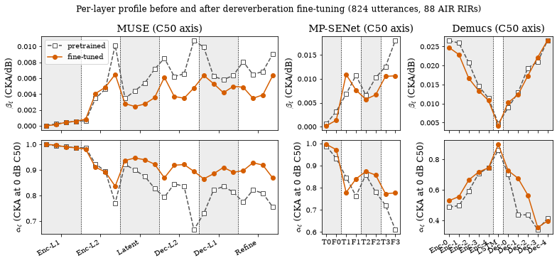
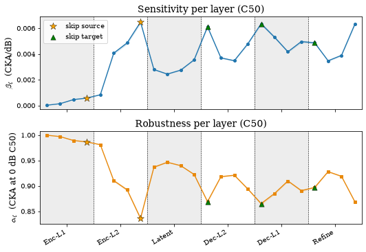
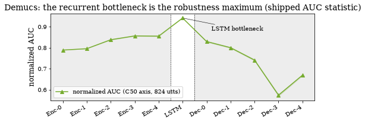

Reverberation and dereverberation fine-tuning#
The probing pipeline repeated on a second degradation axis, reverberation, and then on models adapted to that degradation. Three architectures are swept over C50 at their pretrained and their dereverberation-fine-tuned checkpoints, which answers two questions at once: what fine-tuning does to held-out quality, and what it does to the layer-wise profile. The chapter reproduces the held-out dereverberation scores of MP-SENet and Demucs before and after fine-tuning, the pre/post profile correlations, the fine-tuned MUSE profile under reverberation with bootstrap intervals (paper Fig. 6), the cross-task agreement between noise and reverberation profiles, and the Demucs bottleneck statistics. All numbers come from the small tables under results_tables/ and training/results/; the multi-GB per-utterance parquets are not needed. A gated last section runs the reverb fine-tuned MUSE live.
Runtime: under 2 minutes on any device (the 20,000-draw layer-resample intervals dominate); the optional live inference adds about 1 minute on CUDA, 5 minutes on MPS.
import sys
from pathlib import Path
REPO = Path.cwd().resolve()
while REPO.name != "SE-Probe" and REPO.parent != REPO:
REPO = REPO.parent
if str(REPO) not in sys.path:
sys.path.insert(0, str(REPO))
def _rel(p):
"""Repo-relative path for display (absolute only if outside the repo)."""
try:
return p.relative_to(REPO)
except ValueError:
return p
from se_probe.device import device_info, get_device
from se_probe.plotting import MODEL_COLORS, MODEL_LABELS, apply_paper_rcparams
apply_paper_rcparams()
DEVICE = get_device()
print(device_info(DEVICE))
import pandas as pd
DATA_DIR = REPO / ("results_df" if (REPO / "results_df").exists() else "results_demo")
TABLES = REPO / "results_tables"
print(f"Using data from: {_rel(DATA_DIR)}")
print(f"Paper tables from: {_rel(TABLES)}")
Detected device: cpu
Using data from: results_demo
Paper tables from: results_tables
The C50 axis#
C50 is the early-to-late energy ratio of the room impulse response in dB; higher is drier. The reverberation sweep uses 13 nominal target levels from −5 to 25 dB in 2.5 dB steps, a pool of 88 impulse responses from six rooms of the Aachen Impulse Response database (56 binaural and 32 phone recordings), and five RIR draws per utterance at each level. Per-layer lines are fitted against the nominal levels after averaging CKA across utterances per level, exactly as on the noise axis. The grid and the pool composition are the constants in se_probe.layers.
from se_probe.layers import AIR_TEST_POOL_ROOM_COUNTS, AIR_TEST_POOL_SIZE, C50_GRID
print(f"C50 grid: {len(C50_GRID)} levels, {C50_GRID.min():g} to {C50_GRID.max():g} dB")
print(f"AIR pool: {AIR_TEST_POOL_SIZE} RIRs over {len(AIR_TEST_POOL_ROOM_COUNTS)} rooms: {AIR_TEST_POOL_ROOM_COUNTS}")
assert len(C50_GRID) == 13 and C50_GRID.min() == -5.0 and C50_GRID.max() == 25.0
assert sum(AIR_TEST_POOL_ROOM_COUNTS.values()) == AIR_TEST_POOL_SIZE == 88
C50 grid: 13 levels, -5 to 25 dB
AIR pool: 88 RIRs over 6 rooms: {'lecture': 32, 'meeting': 24, 'office': 18, 'corridor': 6, 'bathroom': 4, 'kitchen': 4}
Held-out dereverberation quality, before and after fine-tuning#
MP-SENet and Demucs were fine-tuned on RIR-Mega convolutive mixtures (schedules in training/README.md) and evaluated on a held-out set of 4,120 mixtures: 824 clean VoiceBank-DEMAND test utterances, each convolved with five draws from a pool of 202 held-out RIR-Mega impulse responses. The pretrained “before” rows were measured on exactly the same set. The MUSE fine-tune was evaluated on a different held-out set of the same size (824 utterances x five distinct RIRs of mean C50 12.0 dB), which is less adverse, so MUSE’s absolute values are not comparable with the other two rows; each architecture is read against its own pretrained arm.
pre = pd.read_csv(REPO / "training/results/pretrained_reverb_eval.csv")
mps = pd.read_csv(REPO / "training/results/mpsenet_ft_test_eval_summary.csv")
dem = pd.read_csv(REPO / "training/results/demucs_ft_test_eval_summary.csv")
rows = []
def _row(system, src, cols=("pesq", "stoi", "estoi", "si_sdr_db")):
rows.append({"system": system, **{c: float(src[c]) for c in cols}})
_row("reverberant input", pre[pre.system == "reverberant_input"].iloc[0])
_row("MP-SENet pretrained (DNS)", pre[pre.system == "mpsenet_pretrained"].iloc[0])
_row("MP-SENet fine-tuned (epoch 50)", mps[(mps.epoch == "epoch_50") & (mps.condition == "enhanced")].iloc[0])
_row("Demucs pretrained (DNS64)", pre[pre.system == "demucs_pretrained"].iloc[0])
_row("Demucs fine-tuned (v2, epoch 57, lr 3e-4)", dem[(dem.checkpoint == "v2_epoch_57") & (dem.condition == "enhanced")].iloc[0])
_row("Demucs fine-tuned (parity, epoch 45, lr 1e-4)", dem[(dem.checkpoint == "parity_epoch_45") & (dem.condition == "enhanced")].iloc[0])
_row("MUSE pretrained (same 202-RIR set, control only)", pre[pre.system == "muse_pretrained"].iloc[0])
heldout = pd.DataFrame(rows).set_index("system")
display(heldout.round(3))
inp = heldout.loc["reverberant input"]
mp_ft = heldout.loc["MP-SENet fine-tuned (epoch 50)"]
dm_ft = heldout.loc["Demucs fine-tuned (v2, epoch 57, lr 3e-4)"]
dm_par = heldout.loc["Demucs fine-tuned (parity, epoch 45, lr 1e-4)"]
print(f"input PESQ {inp.pesq:.3f} (paper 1.658)")
print(f"MP-SENet FT PESQ {mp_ft.pesq:.3f} (paper 3.361), SI-SDR gain {mp_ft.si_sdr_db - inp.si_sdr_db:+.1f} dB (paper +19.6)")
print(f"Demucs v2 PESQ {dm_ft.pesq:.3f} (paper 2.441), parity {dm_par.pesq:.3f} (paper 2.339), SI-SDR gain {dm_ft.si_sdr_db - inp.si_sdr_db:+.1f} dB (paper +13.9)")
print(f"pretrained PESQ: MP-SENet {heldout.loc['MP-SENet pretrained (DNS)'].pesq:.2f} (paper 1.69), Demucs {heldout.loc['Demucs pretrained (DNS64)'].pesq:.2f} (paper 1.73)")
assert abs(inp.pesq - 1.658) < 5e-4
assert abs(mp_ft.pesq - 3.361) < 5e-4 and abs((mp_ft.si_sdr_db - inp.si_sdr_db) - 19.6) < 0.05
assert abs(dm_ft.pesq - 2.441) < 5e-4 and abs(dm_par.pesq - 2.339) < 5e-4
assert abs((dm_ft.si_sdr_db - inp.si_sdr_db) - 13.9) < 0.05
assert abs(heldout.loc["MP-SENet pretrained (DNS)"].pesq - 1.69) < 5e-3
assert abs(heldout.loc["Demucs pretrained (DNS64)"].pesq - 1.73) < 5e-3
# MUSE (different held-out set, from training/README.md): PESQ 2.17 -> 3.02, STOI 0.834 -> 0.944
muse_eval = pd.DataFrame({"PESQ": [2.172, 3.024], "STOI": [0.834, 0.944]},
index=["MUSE pretrained (824 x 5 RIRs, mean C50 12.0 dB)", "MUSE fine-tuned (epoch 48)"])
display(muse_eval)
| pesq | stoi | estoi | si_sdr_db | |
|---|---|---|---|---|
| system | ||||
| reverberant input | 1.658 | 0.816 | 0.620 | -10.130 |
| MP-SENet pretrained (DNS) | 1.693 | 0.802 | 0.595 | -9.691 |
| MP-SENet fine-tuned (epoch 50) | 3.361 | 0.966 | 0.904 | 9.440 |
| Demucs pretrained (DNS64) | 1.729 | 0.800 | 0.624 | -9.231 |
| Demucs fine-tuned (v2, epoch 57, lr 3e-4) | 2.441 | 0.918 | 0.799 | 3.770 |
| Demucs fine-tuned (parity, epoch 45, lr 1e-4) | 2.339 | 0.914 | 0.790 | 3.340 |
| MUSE pretrained (same 202-RIR set, control only) | 1.817 | 0.787 | 0.596 | -10.034 |
input PESQ 1.658 (paper 1.658)
MP-SENet FT PESQ 3.361 (paper 3.361), SI-SDR gain +19.6 dB (paper +19.6)
Demucs v2 PESQ 2.441 (paper 2.441), parity 2.339 (paper 2.339), SI-SDR gain +13.9 dB (paper +13.9)
pretrained PESQ: MP-SENet 1.69 (paper 1.69), Demucs 1.73 (paper 1.73)
| PESQ | STOI | |
|---|---|---|
| MUSE pretrained (824 x 5 RIRs, mean C50 12.0 dB) | 2.172 | 0.834 |
| MUSE fine-tuned (epoch 48) | 3.024 | 0.944 |
Does fine-tuning reorganise the profile?#
Each architecture was re-probed under reverberation at its pretrained and its dereverberation-fine-tuned checkpoint, over the same 88-RIR six-room AIR pool, 824 utterances and 13 target C50 levels, under one software stack (results_tables/c50/c50_824_per_layer_supp.csv, arms *_pre / *_ft). The paper reports that the per-layer slope profile before and after fine-tuning correlates at r = 0.91 for MUSE, 0.81 for MP-SENet and 0.98 for Demucs, the intercept profiles at 0.85, 0.84 and 0.90, with mean absolute changes of 0.0020, 0.0029 and 0.0015 in the slope: the magnitude moves more than the shape.
from se_probe.profiles import finetune_shift
supp = pd.read_csv(TABLES / "c50/c50_824_per_layer_supp.csv")
PAPER_SHIFT = {"muse": (0.91, 0.85, 0.0020), "mpsenet": (0.81, 0.84, 0.0029), "demucs": (0.98, 0.90, 0.0015)}
shift_rows = []
for model in ["muse", "mpsenet", "demucs"]:
pre_t = supp[supp.arm == f"{model}_pre"]
post_t = supp[supp.arm == f"{model}_ft"]
s = finetune_shift(pre_t, post_t, keys=("beta", "alpha", "A"))
shift_rows.append({"model": MODEL_LABELS[model], "n_layers": s["n_layers"],
"r(beta)": s["beta_r"], "r(alpha)": s["alpha_r"],
"mean|d beta|": s["beta_mean_abs_delta"], "mean|d alpha|": s["alpha_mean_abs_delta"],
"r(AUC)": s["A_r"]})
pb, pa, pd_ = PAPER_SHIFT[model]
print(f"{MODEL_LABELS[model]:9s} r(beta) {s['beta_r']:.3f} (paper {pb}), r(alpha) {s['alpha_r']:.3f} (paper {pa}), "
f"mean|d beta| {s['beta_mean_abs_delta']:.4f} (paper {pd_})")
assert abs(s["beta_r"] - pb) < 5e-3 and abs(s["alpha_r"] - pa) < 5e-3
assert abs(s["beta_mean_abs_delta"] - pd_) < 1e-4
pd.DataFrame(shift_rows).set_index("model").round(4)
MUSE r(beta) 0.906 (paper 0.91), r(alpha) 0.854 (paper 0.85), mean|d beta| 0.0020 (paper 0.002)
MP-SENet r(beta) 0.809 (paper 0.81), r(alpha) 0.835 (paper 0.84), mean|d beta| 0.0029 (paper 0.0029)
Demucs r(beta) 0.976 (paper 0.98), r(alpha) 0.900 (paper 0.9), mean|d beta| 0.0015 (paper 0.0015)
| n_layers | r(beta) | r(alpha) | mean|d beta| | mean|d alpha| | r(AUC) | |
|---|---|---|---|---|---|---|
| model | ||||||
| MUSE | 24 | 0.9062 | 0.8539 | 0.0020 | 0.0658 | 0.7755 |
| MP-SENet | 8 | 0.8085 | 0.8354 | 0.0029 | 0.0628 | 0.8615 |
| Demucs | 11 | 0.9760 | 0.9001 | 0.0015 | 0.0589 | 0.8070 |
import matplotlib.pyplot as plt
import numpy as np
from se_probe.layers import layout
from se_probe.plotting import OKABE_ITO, depth_axis
fig, axes = plt.subplots(2, 3, figsize=(11, 5.2), gridspec_kw={"width_ratios": [24, 8, 11]})
for j, model in enumerate(["muse", "mpsenet", "demucs"]):
lay = layout(model)
pre_t = supp[supp.arm == f"{model}_pre"].sort_values("depth")
post_t = supp[supp.arm == f"{model}_ft"].sort_values("depth")
x = np.arange(len(pre_t))
for i, key in enumerate(["beta", "alpha"]):
ax = axes[i, j]
depth_axis(ax, lay, show_labels=(i == 1))
ax.plot(x, pre_t[key].to_numpy(), marker="s", ls="--", mfc="white", color=OKABE_ITO["gray"], label="pretrained")
ax.plot(x, post_t[key].to_numpy(), marker="o", ls="-", color=OKABE_ITO["vermillion"], label="fine-tuned")
if i == 0:
ax.set_title(f"{MODEL_LABELS[model]} (C50 axis)")
ax.set_ylabel(r"$\beta_\ell$ (CKA/dB)" if key == "beta" else r"$\alpha_\ell$ (CKA at 0 dB C50)")
axes[0, 0].legend(loc="upper left")
fig.suptitle("Per-layer profile before and after dereverberation fine-tuning (824 utterances, 88 AIR RIRs)")
plt.tight_layout();

The MUSE profile under reverberation, with bootstrap intervals#
The fine-tuned MUSE profile on the C50 axis, in the layout of the noise-axis profile figure. Bands are 95% percentile intervals from 1,000 whole-utterance resamples of the 824 probing utterances (fig_v5_c50_824_ft_profiles_values.csv, seed 20260806). Stars mark the encoder skip sources and triangles the decoder skip targets; under reverberation the network maximum of the slope falls at the encoder skip source rather than at a decoder junction.
from se_probe.plotting import profile_panel_pair
prof = pd.read_csv(TABLES / "c50/fig_v5_c50_824_ft_profiles_values.csv")
muse_c50 = prof[prof.model == "muse"].sort_values("depth").reset_index(drop=True)
assert len(muse_c50) == 24
fig, (ax1, ax2) = plt.subplots(2, 1, figsize=(7.5, 5.2), sharex=True)
profile_panel_pair(ax1, ax2, muse_c50, layout("muse"), axis_tag="C50",
beta_ci=("beta_lo", "beta_hi"), alpha_ci=("alpha_lo", "alpha_hi"))
h, lab = ax1.get_legend_handles_labels()
ax1.legend(h[:2], lab[:2], loc="upper left")
plt.tight_layout()
peak = muse_c50.loc[muse_c50.beta.idxmax()]
print(f"peak sensitivity at depth {int(peak.depth)}: {peak.layer.split('.')[1]} layer {peak.layer.split('.')[-2]}, "
f"beta = {peak.beta:.4f}; r(alpha, beta) = {np.corrcoef(muse_c50.alpha, muse_c50.beta)[0, 1]:+.3f} (paper -0.993)")
assert abs(np.corrcoef(muse_c50.alpha, muse_c50.beta)[0, 1] - (-0.993)) < 5e-3
peak sensitivity at depth 7: encoder_level2 layer 3, beta = 0.0065; r(alpha, beta) = -0.993 (paper -0.993)

Cross-task agreement: does the noise profile anticipate the reverberation profile?#
Each architecture’s noise-axis profile (pretrained checkpoint, results_tables/snr/fits_*_snr_jobB.csv) is correlated with its own reverberation-axis profile (fine-tuned arm) across its layers. The 95% intervals resample layers with replacement (20,000 draws, seed 20260810), the appropriate unit for a question about profile shape. The paper quotes MUSE rank correlations of +0.837 [+0.580, +0.941] for sensitivity and +0.864 [+0.664, +0.957] for robustness, and MP-SENet +0.833 [+0.300, +1.000] for robustness; the interval endpoints depend on the resample draws (and on the discard rule for degenerate draws) at the third decimal.
from se_probe.profiles import layer_resample_ci, profile_agreement
PAPER_CROSS = {("muse", "beta"): (0.837, (0.580, 0.941)), ("muse", "alpha"): (0.864, (0.664, 0.957)),
("mpsenet", "alpha"): (0.833, (0.300, 1.000))}
cross_rows = []
for model in ["muse", "mpsenet", "demucs"]:
snr_fit = pd.read_csv(TABLES / f"snr/fits_{model}_snr_jobB.csv").set_index("layer")
ft = supp[supp.arm == f"{model}_ft"].set_index("layer").loc[snr_fit.index]
for key in ["beta", "alpha"]:
ag = profile_agreement(snr_fit[key], ft[key])
ci = layer_resample_ci(snr_fit[key].to_numpy(), ft[key].to_numpy(), n_boot=20000, seed=20260810)
lo, hi = ci["spearman"]
cross_rows.append({"model": MODEL_LABELS[model], "profile": key, "n": ag["n"],
"spearman": ag["spearman_rho"], "ci_lo": lo, "ci_hi": hi, "p": ag["spearman_p"],
"pearson": ag["pearson_r"]})
if (model, key) in PAPER_CROSS:
pr, (plo, phi) = PAPER_CROSS[(model, key)]
print(f"{MODEL_LABELS[model]:9s} {key:5s} rho = {ag['spearman_rho']:+.3f} [{lo:+.3f}, {hi:+.3f}]"
f" (paper {pr:+.3f} [{plo:+.3f}, {phi:+.3f}])")
assert abs(ag["spearman_rho"] - pr) < 5e-3
cross = pd.DataFrame(cross_rows).set_index(["model", "profile"]).round(3)
cross
MUSE beta rho = +0.837 [+0.580, +0.941] (paper +0.837 [+0.580, +0.941])
MUSE alpha rho = +0.864 [+0.658, +0.954] (paper +0.864 [+0.664, +0.957])
MP-SENet alpha rho = +0.833 [+0.308, +1.000] (paper +0.833 [+0.300, +1.000])
| n | spearman | ci_lo | ci_hi | p | pearson | ||
|---|---|---|---|---|---|---|---|
| model | profile | ||||||
| MUSE | beta | 24 | 0.837 | 0.580 | 0.941 | 0.000 | 0.877 |
| alpha | 24 | 0.864 | 0.658 | 0.954 | 0.000 | 0.881 | |
| MP-SENet | beta | 8 | 0.476 | -0.524 | 1.000 | 0.233 | 0.676 |
| alpha | 8 | 0.833 | 0.308 | 1.000 | 0.010 | 0.776 | |
| Demucs | beta | 11 | 0.482 | -0.211 | 0.916 | 0.133 | 0.435 |
| alpha | 11 | 0.518 | -0.215 | 0.917 | 0.102 | 0.498 |
Demucs is organised around its bottleneck rather than depth, so its whole-profile correlations are not significant; what carries across tasks for Demucs is one specific feature, examined next.
The recurrent bottleneck is Demucs’s most robust layer, on both axes#
The paper’s statement: under reverberation the LSTM bottleneck is the network maximum of the intercept, alpha = 0.8986 against 0.7444 for the runner-up encoder block, a gap of +0.154 [+0.151, +0.158]; it is the arg-max of alpha in 1,000 of 1,000 utterance bootstrap resamples and the arg-min of beta in 1,000 of 1,000. It replicates on the noise axis, alpha = 0.878 against 0.715 for the runner-up decoder block.
What the shipped tables support. The point estimates are reproduced below from the per-arm fit tables: 0.8986 against 0.7444 and the +0.154 gap on the C50 axis, and 0.87754 against 0.71454 (decoder.0) on the noise axis. The paper’s alpha-gap interval [+0.151, +0.158] and its two 1,000/1,000 counts were computed from the per-utterance C50 parquet, which is not shipped, so they cannot be rebuilt here and are not asserted. What ships instead is a supplementary statistic on a different quantity, the normalised AUC of the CKA-vs-C50 curve (demucs_bottleneck.csv, seed 20260802): LSTM 0.9416 against 0.8564 for encoder.3, gap +0.0852 [+0.0832, +0.0873], arg-max in 1,000 of 1,000 utterance resamples. Those AUC figures are the shipped file’s numbers, not numbers from the paper.
pl = pd.read_csv(TABLES / "c50/per_layer_c50.csv")
dm = pl[(pl.scale == 824) & (pl.model == "demucs")].sort_values("depth").reset_index(drop=True)
# Paper numbers: the alpha point estimates and the +0.154 point gap (C50 axis), and the noise-axis pair.
dft = supp[supp.arm == "demucs_ft"].set_index("layer")
a_lstm, a_run = dft.loc["lstm", "alpha"], dft.alpha.drop("lstm").max()
print(f"C50 alpha (paper's numbers): LSTM {a_lstm:.4f} vs runner-up {dft.alpha.drop('lstm').idxmax()} {a_run:.4f}; "
f"point gap {a_lstm - a_run:+.3f} (paper 0.8986 vs 0.7444, +0.154)")
assert abs(a_lstm - 0.8986) < 5e-4 and abs(a_run - 0.7444) < 5e-4 and abs((a_lstm - a_run) - 0.154) < 5e-4
print(" the paper's gap interval [+0.151, +0.158] and its 1,000/1,000 arg-max / arg-min counts need the\n"
" per-utterance C50 parquet, which is not shipped: not reproduced here, not asserted.")
dsnr = pd.read_csv(TABLES / "snr/fits_demucs_snr_jobB.csv").set_index("layer")
s_lstm, s_run = dsnr.loc["lstm", "alpha"], dsnr.alpha.drop("lstm").max()
print(f"SNR alpha (paper's numbers): LSTM {s_lstm:.5f} vs runner-up {dsnr.alpha.drop('lstm').idxmax()} {s_run:.5f} "
f"(paper 0.878 vs 0.715)")
assert abs(s_lstm - 0.878) < 5e-4 and abs(s_run - 0.715) < 5e-4
# Shipped supplementary statistic (demucs_bottleneck.csv): normalised AUC, not a paper number.
bn = pd.read_csv(TABLES / "c50/demucs_bottleneck.csv")
bn824 = bn[bn.scale == 824].iloc[0]
print(f"normalised AUC (shipped supplementary statistic, demucs_bottleneck.csv, not in the paper): "
f"LSTM {bn824.lstm_auc:.4f} vs runner-up {bn824.runner_up} {bn824.runner_auc:.4f}; "
f"gap {bn824.gap:+.4f} [{bn824.gap_lo:+.4f}, {bn824.gap_hi:+.4f}], P(peak = LSTM) = {bn824.p_peak_is_lstm:.3f}")
assert abs(bn824.gap - 0.0852) < 5e-4 and abs(bn824.gap_lo - 0.0832) < 5e-4 and abs(bn824.gap_hi - 0.0873) < 5e-4
assert bn824.p_peak_is_lstm == 1.0
fig, ax = plt.subplots(figsize=(7, 3))
x = np.arange(len(dm))
depth_axis(ax, layout("demucs"))
ax.fill_between(x, dm.auc_lo, dm.auc_hi, color=MODEL_COLORS["demucs"], alpha=0.25, lw=0)
ax.plot(x, dm.auc, marker="^", color=MODEL_COLORS["demucs"], label="normalized AUC (C50 axis, 824 utts)")
ax.annotate("LSTM bottleneck", xy=(5, dm.auc[5]), xytext=(6.2, dm.auc[5] - 0.06), arrowprops=dict(arrowstyle="-", lw=0.6))
ax.set_ylabel("normalized AUC")
ax.set_title("Demucs: the recurrent bottleneck is the robustness maximum (shipped AUC statistic)")
ax.legend(loc="lower left")
plt.tight_layout();
C50 alpha (paper's numbers): LSTM 0.8986 vs runner-up encoder.4 0.7444; point gap +0.154 (paper 0.8986 vs 0.7444, +0.154)
the paper's gap interval [+0.151, +0.158] and its 1,000/1,000 arg-max / arg-min counts need the
per-utterance C50 parquet, which is not shipped: not reproduced here, not asserted.
SNR alpha (paper's numbers): LSTM 0.87754 vs runner-up decoder.0 0.71454 (paper 0.878 vs 0.715)
normalised AUC (shipped supplementary statistic, demucs_bottleneck.csv, not in the paper): LSTM 0.9416 vs runner-up encoder.3 0.8564; gap +0.0852 [+0.0832, +0.0873], P(peak = LSTM) = 1.000

Optional: live inference with the reverb fine-tuned MUSE#
The cell below loads the epoch-48 fine-tuned checkpoint shipped via scripts/setup.py (HuggingFace yairamr/SE-Probe-models) and runs the probing pipeline on a single utterance. Training-from-scratch code lives under training/. Set SE_PROBE_RUN_INFERENCE=1 to enable it.
import os
if os.environ.get("SE_PROBE_RUN_INFERENCE") == "1":
import numpy as np
from se_probe.activation_extraction import load_muse_activation_extractor_reverb
from se_probe.cka import cka
# scripts/setup.py downloads the reverb fine-tuned checkpoint to pretrained_models/muse/
ckpt = REPO / "pretrained_models/muse/muse_reverb_e48.pt"
if not ckpt.exists():
raise FileNotFoundError(
"Reverb checkpoint not found. Run `python scripts/setup.py` to fetch it from HuggingFace."
)
print(f"Loading reverb FT MUSE from: {ckpt}")
extractor = load_muse_activation_extractor_reverb(device=DEVICE, checkpoint_path=str(ckpt))
rng = np.random.default_rng(0)
sr = 16000
clean = (rng.standard_normal(sr * 2) * 0.05).astype("float32")
rir = (rng.standard_normal(int(sr * 0.5)) * 0.05).astype("float32")
rir[0] = 1.0
rev = np.convolve(clean, rir, mode="same").astype("float32")
act_clean, _ = extractor(clean)
act_rev, _ = extractor(rev)
layer = next(iter(act_clean))
val = cka(act_clean[layer], act_rev[layer])
print(f"Live CKA on synthetic reverb clip ({layer}): {float(val):.4f}")
else:
print("SE_PROBE_RUN_INFERENCE not set — skipping live inference. Set it to '1' to enable.")
SE_PROBE_RUN_INFERENCE not set — skipping live inference. Set it to '1' to enable.